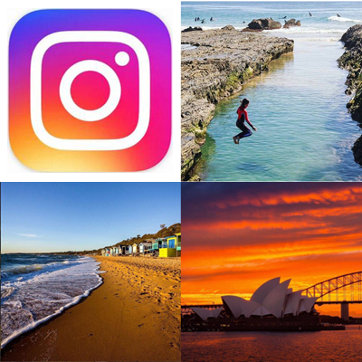

Insta-Australia
Instagram is a social media platform where users can post and share images of their lives, locations and inspirations.
Look up any capital Australian city and view what fellow instagramers have snapshot in your city! View the laneways, food, cafes, culture and events of any destination.

Melbourne is the capital city of Victoria. A city of stately 19th-century buildings and tree-lined boulevards. Yet at its centre is the strikingly modern Federation Square development, with plazas, bars, restaurants and cultural events along the Yarra River. In Southbank, the Melbourne Arts Precinct is site of Arts Centre Melbourne – a performing arts complex – and National Gallery of Victoria, displaying Australian and Indigenous art.
See More & Follow @visitmelbourne
Sydney is the capital city of New South Wales. One of Australia's largest cities, is best known for its harbourfront Opera House, with a distinctive sail-like design. Massive Darling Harbour and Circular Quay are hubs of waterside life, with the towering, arched Harbour Bridge and esteemed Royal Botanic Gardens nearby. Sydney Tower’s 268m glass viewing platform, the Skywalk, offers 360-degree views of the city, harbour and suburbs.
See More & Follow @sydney
Canberra is the national capital city of Australia. Surrounded by forest, farmland and nature reserves, it earns its nickname, the "Bush Capital.” The city's focal point is Lake Burley Griffin, filled with sailboats and kayaks. On the lakeshore is the massive, strikingly modern Parliament House, as well as museums including the National Gallery, known for its indigenous art collections.
See More & Follow @visitcanberra
Gold Coast is a popular city of Queensland. From the iconic Surfers Paradise beach to the dining precincts of Main Beach and Broadbeach and out to the lush, green hinterland, there’s a new experience waiting for you at every turn on the Gold Coast. Theme parks, world-renowned beaches and year-round sunshine are just a few of the reasons 10.5 million visitors flock to the Gold Coast each year.
See More & Follow @visitgoldcoast
Brisbane is the capital city of Queensland. A big, modern city set on the Brisbane River. Clustered in its South Bank cultural precinct are institutions including Queensland Museum and Sciencentre, with noted interactive exhibitions, and Queensland Gallery of Modern Art, among Australia's major contemporary art museums. Looming over the city is Mt. Coot-tha, site of sprawling Brisbane Botanic Gardens, with panoramic views from its summit.
See More & Follow @visitbrisbane
Hobart is the capital city of Tasmania. The city sits on the River Derwent off the coast of Australia. At its fashionable Salamanca Place, old sandstone warehouses host galleries and cafes, and a popular market is held on Saturdays. Nearby is Battery Point, a historic district with narrow lanes and colonial-era cottages. The city's backdrop is 1,270m-high Mt. Wellington, a hiking and cycling destination offering sweeping views.
See More & Follow @tasmania
Perth is the capital city of Western Australia. The city sits where the Swan River meets the southwest coast. Its suburbs lie along sandy beaches, and the huge, riverside Kings Park and Botanic Garden on Mt. Eliza offer sweeping views of the city. The Perth Cultural Centre houses the state ballet and opera companies, and occupies its own central precinct, including a theatre, art galleries and the Western Australian Museum.
See More & Follow @perthcityaus
Adelaide is the capital city of South Australia. Its ring of parkland on the River Torrens is home to renowned museums such as the Art Gallery of South Australia, displaying expansive collections including noted Indigenous art, and the South Australian Museum, devoted to natural history. The city's Adelaide Festival is an annual international arts gathering with spin-offs including fringe and film events.
See More & Follow @southaustralia
Darwin is the capital city of Nothern Territory.A gateway to Kakadu National Park, Australia’s largest. It's known as a laid-back blend of frontier outpost and modern city. At its heart is the Smith Street pedestrian mall, notable for shops selling Aboriginal art and crafts, South Sea pearls, opals and diamonds. The liveliest part of the waterfront is reachable from the Central Business District via the Esplanade or an elevated walkway.
See More & Follow @city_of_darwin